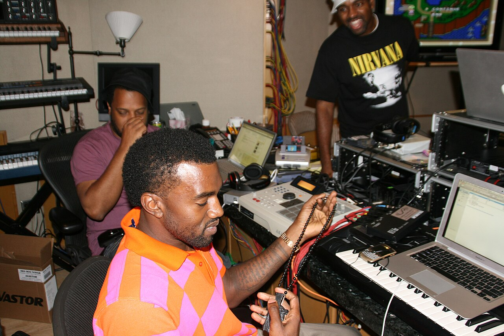
MusicArtist and Producer
Kanye helped popularize soulful sample-based production in the early 2000s, then later pushed hip-hop toward electronic sounds, Auto-Tune, gospel, industrial music, and stadium-sized album experiences.
A fan-made archive covering Ye's biography, major album eras, unreleased projects, Yeezy fashion, popular sneaker models, creative influence, and cultural legacy.
Kanye West, also known as Ye, is an American rapper, producer, fashion designer, and cultural figure. He first became known as a producer, especially through his work with Jay-Z, before becoming one of the most important solo artists in hip-hop. What makes Kanye different is that he did not stay in one lane. He changed his sound, image, fashion, stage design, and business ideas many times throughout his career.

MusicKanye helped popularize soulful sample-based production in the early 2000s, then later pushed hip-hop toward electronic sounds, Auto-Tune, gospel, industrial music, and stadium-sized album experiences.
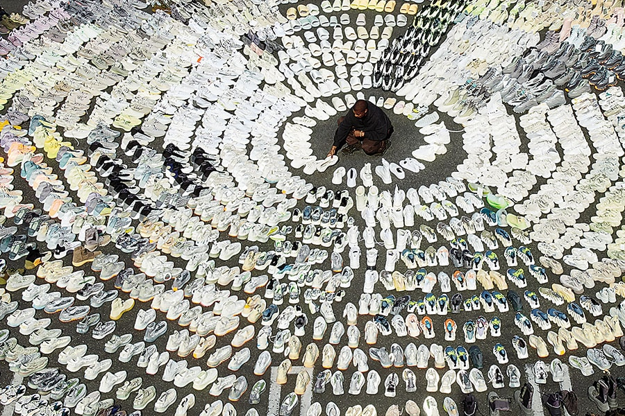
FashionThrough Yeezy, Kanye helped make earth tones , oversized fits, futuristic footwear, and minimalist streetwear a major part of modern fashion.
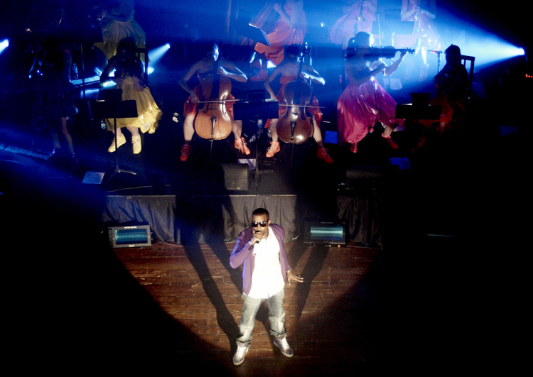
CultureHis influence goes beyond music. Album rollouts, listening parties, sneaker drops, fashion shows, and visual branding became part of his artistic identity.
Each era has a different sound and look. This timeline shows how Kanye's music, fashion, and public image changed together.
Click each card for a deeper capsule. The page focuses on why each album matters, not just when it came out.
The unreleased section is what makes a Kanye fan page feel like a fan archive. The key is separating public facts from fan theories so the page stays credible.
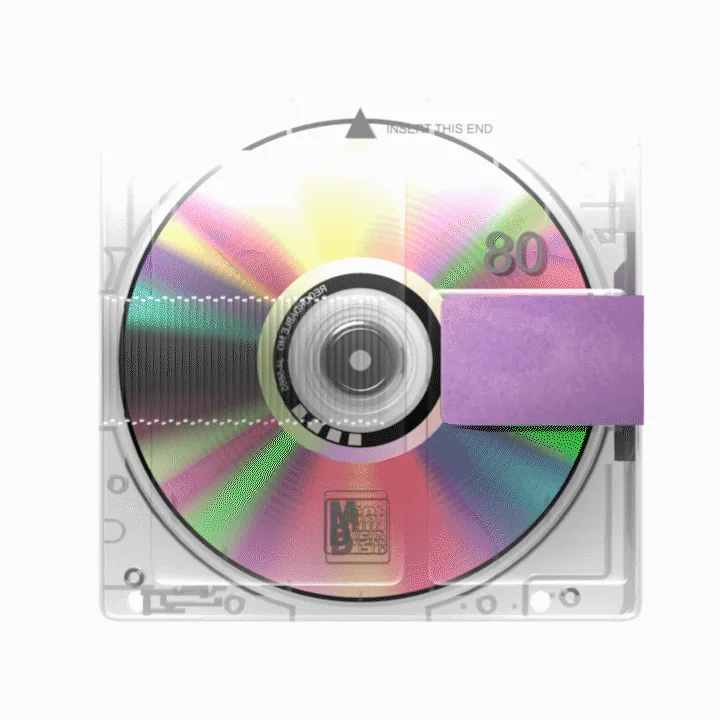
YandhiYandhi was publicly expected in 2018, delayed more than once, and never released in its original form. Some ideas and songs from that period later changed direction or appeared in later Kanye projects.
Donda 2 was tied to the Stem Player rather than a normal streaming rollout. It is best described as unfinished, mutable, and unusual in how it challenged the normal album-release model.
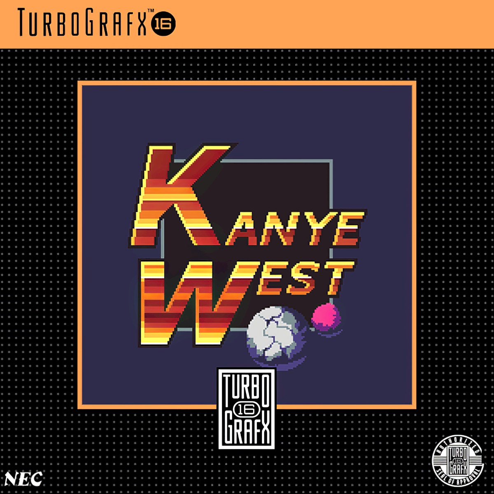
TurboGrafx16Kanye announced TurboGrafx16 in 2016, named after the video game console, but no official stable public version became a standard released album.
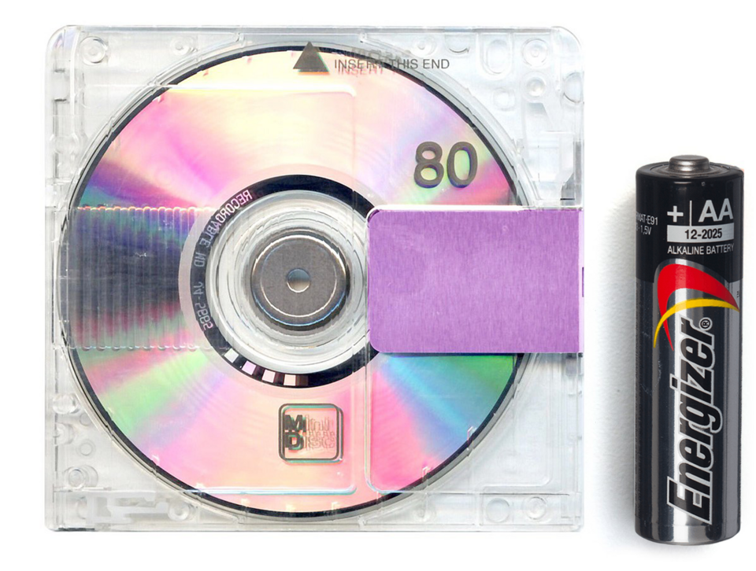
Fan favoriteMany fans imagine Yandhi as the bridge between the chaotic 2018 Ye era and the religious direction of Jesus Is King. That makes it feel like an alternate timeline in his discography.
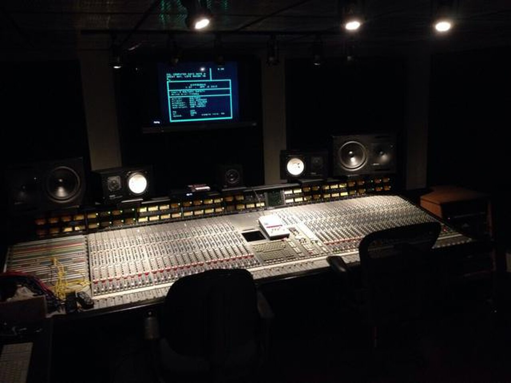
LeaksUnreleased Kanye songs circulate heavily in fan communities, which makes fans feel like they are watching drafts, sketches, and abandoned ideas rather than only finished albums.
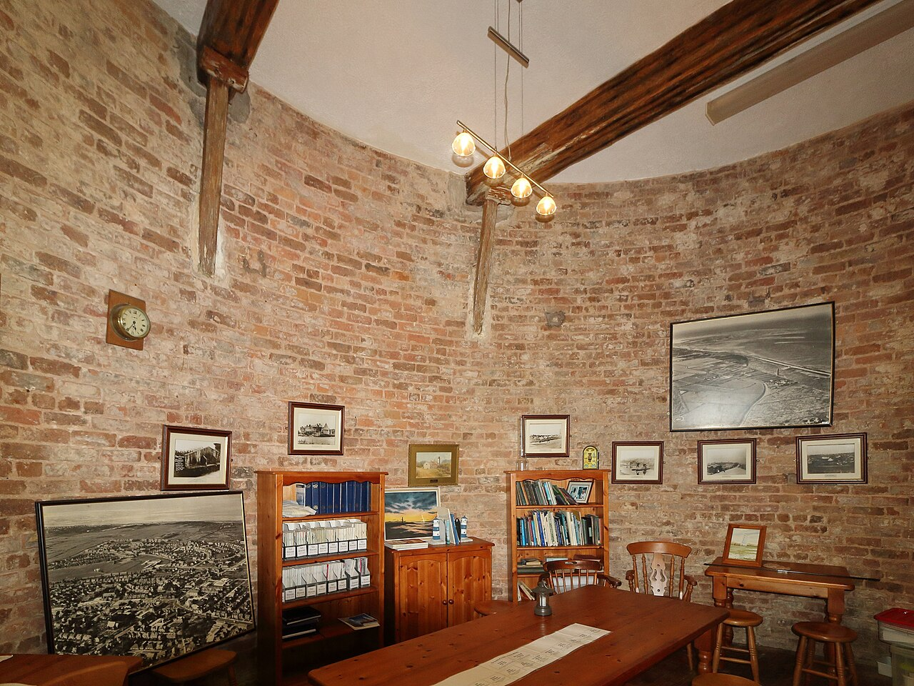
Careful wordingFor unreleased albums, use words like reported, leaked, rumored, fan-favorite, or early version. Avoid presenting fan-made tracklists as official.
Put confirmed facts on the left and fan theories on the right. This lets visitors enjoy the mystery without confusing speculation with verified history.
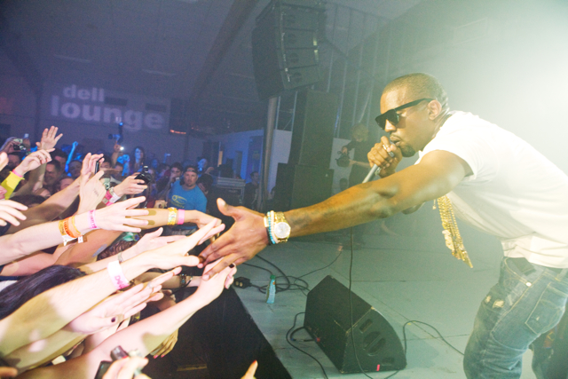
InteractiveAsk: Which unreleased project would you want officially finished? Options: Yandhi, TurboGrafx16, Good Ass Job, So Help Me God, Donda 2.
Use darker colors, blurred cards, and labels like Draft, Lost Era, Fan Myth, and Alternate Timeline to make this section visually different.
The Yeezy story is best shown as three chapters: Nike proved the concept, adidas made it massive, and Gap tried to bring the design language to everyday basics.
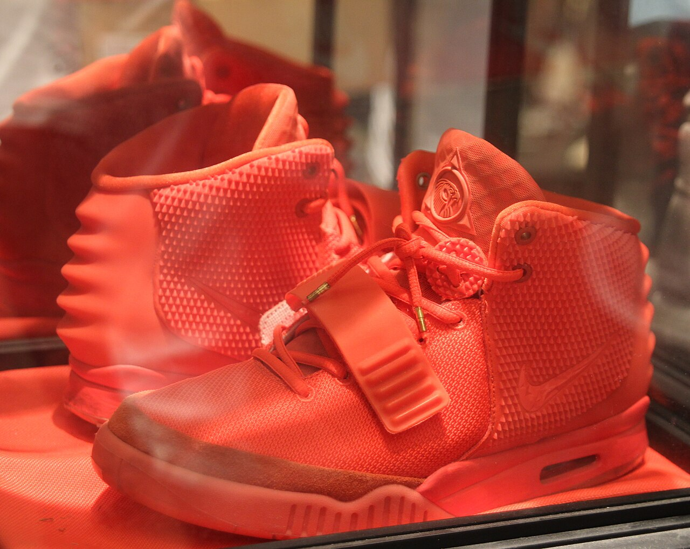
Nike chapterBefore adidas, Kanye's Nike Air Yeezy proved that a non-athlete could create real sneaker hysteria. This matters because it changed expectations for what a musician's product collaboration could be.
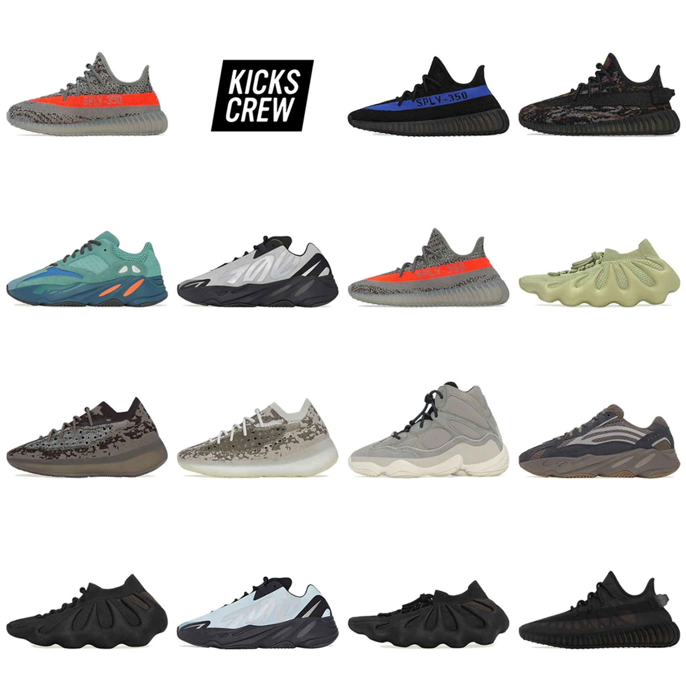
adidas chapterThe adidas era turned Yeezy into a full footwear identity: knit runners, chunky sneakers, minimal slides, and alien-looking foam shoes. The brand did not rely on one silhouette.
Yeezy Gap was built around accessible basics, hoodies, jackets, and muted colors. Kanye's public idea of extremely affordable basics, including the $20 clothing dream, works best as an ambition rather than the actual price of most major pieces.
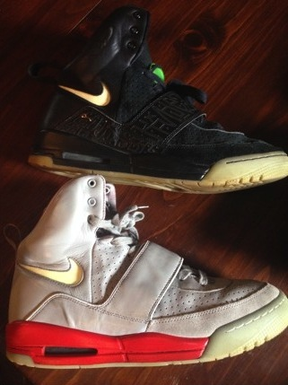
Design languageYeezy's look is easy to recognize: beige, gray, brown, black, sculptural shoes, minimal logos, oversized fits, and clothing that feels like a uniform from a future city.
These four models show why Yeezy became more than artist merch. The images rotate automatically, and you can click a sneaker to change the featured model.
The 350 V2 is probably the most recognizable Yeezy sneaker. Its knit upper, stripe detail, Boost cushioning, and everyday shape made it a casual uniform piece.
Kanye is influential because his impact is not limited to one song, one album, or one sneaker. His influence is a model for building a whole creative universe across production, vulnerability, fashion, visual identity, live events, and product design.
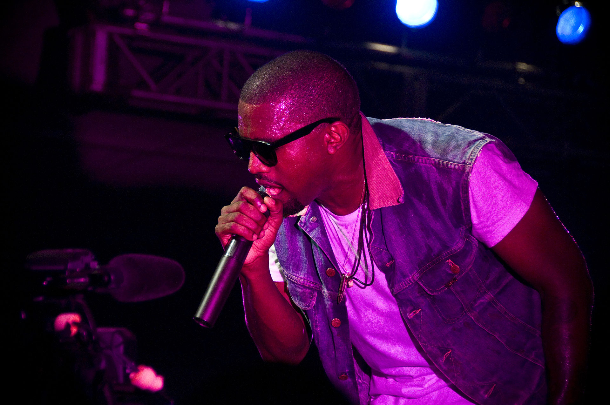
Kanye's early soul-sample sound made the producer feel like a storyteller, not just someone making beats. Chopped vocals, warm loops, sped-up samples, and emotional hooks became part of his signature.
That mattered because it helped people hear the producer as a central artist. His later albums kept changing the palette: orchestral arrangements, electronic synths, industrial distortion, gospel choirs, and minimalist drums.
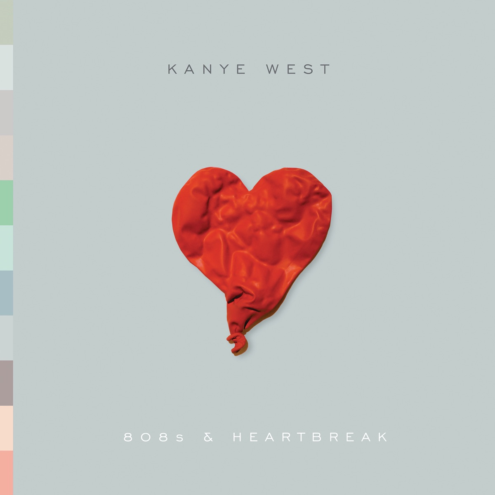
808s & Heartbreak helped make Auto-Tuned sadness, heartbreak, loneliness, and melodic rap feel normal in the center of hip-hop. It gave later artists permission to be less armored and more emotional.
You can hear that influence in the worlds of Drake, Travis Scott, Kid Cudi, Future, Juice WRLD, and many artists who blur rap, R&B, and pop melody.
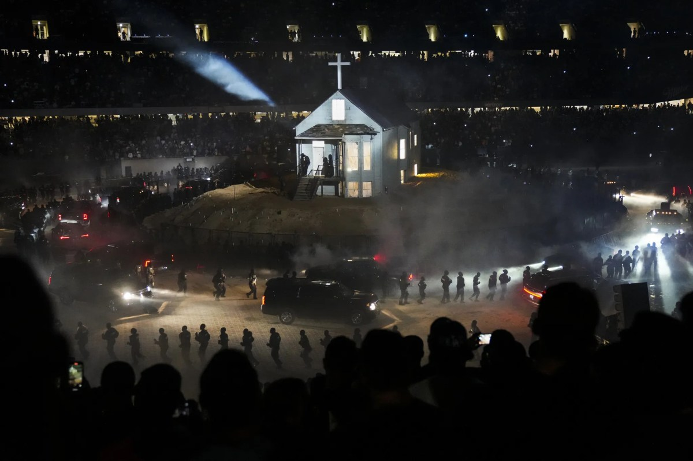
Kanye turned rollouts into part of the art. Listening parties, livestreams, merch drops, stage design, masks, architecture, and public revisions all became part of how the audience experienced the music.
The Life of Pablo and Donda especially show how an album can become a public process instead of a private release.
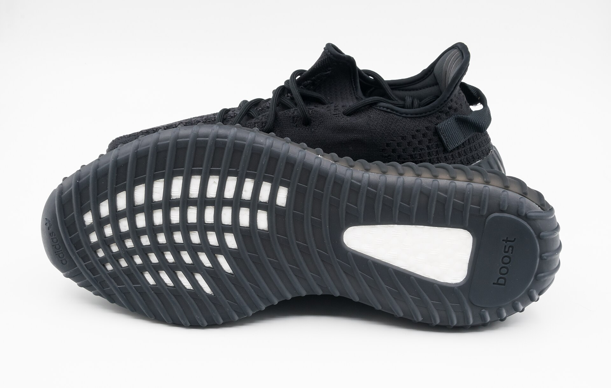
Yeezy showed that an artist could move beyond endorsement and create a real design language. The 350, 700, Foam Runner, Slide, and other models made strange shapes feel mainstream.
The influence is not only the shoes. It is the idea that an artist's taste can shape product design, resale culture, color palettes, and everyday uniforms.
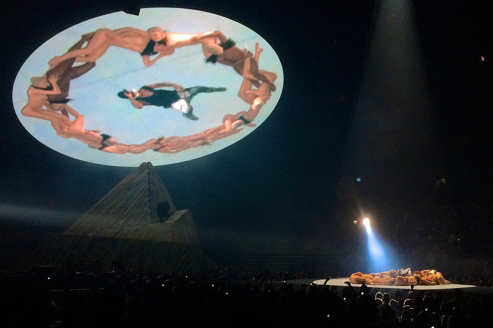
Each era has a visual world: College Dropout has the bear and campus imagery, Graduation is colorful and futuristic, Yeezus is harsh and minimal, Pablo is merch-heavy and fragmented, and Donda is dark and stadium-sized.
That made fans read the clothes, cover art, lighting, and live design as part of the album, not just decoration around it.
A stronger fan page should not pretend the story is only positive. His artistic impact is enormous, but his offensive public statements, controversies, and damaged business relationships are also part of how people understand him now.
That tension is why his legacy has to be discussed carefully: the art changed culture, while the public behavior also caused real criticism and consequences.
On this page, his influence is shown as a system. The beats connect to the album covers, the album covers connect to fashion, the fashion connects to sneakers, and the sneakers connect back to how fans remember each era.
That is why Kanye's career is useful for a visual archive: every period has a sound, a look, a product language, and a public story around it.